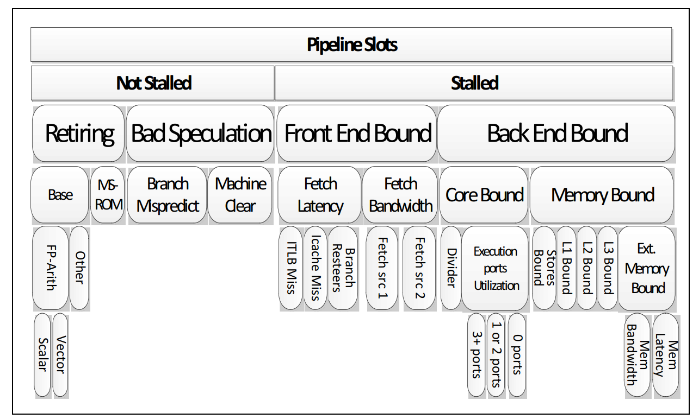
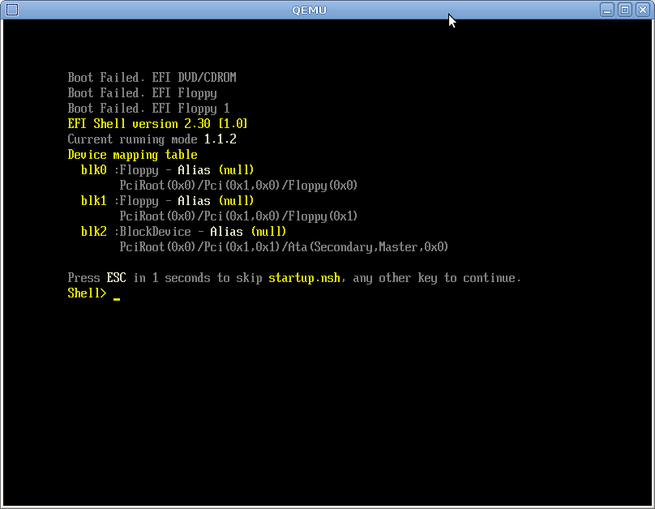

<!doctype html>
<html>
  <head>
    <meta charset="utf-8">
    <meta name="viewport" content="width=device-width, initial-scale=1.0, maximum-scale=1.0, user-scalable=no">

    <title>Performance Is Not a Number: Avoiding Microbenchmarking Pitfalls</title>

    <link rel="stylesheet" href="reveal.js/css/reveal.css">
    <link rel="stylesheet" href="reveal.js/css/theme/league.css" id="theme">
    <link rel="stylesheet" href="extensions/plugin/line-numbers/line-numbers.css">
    <link rel="stylesheet" href="extensions/css/highlight-styles/zenburn.css">
    <link rel="stylesheet" href="extensions/css/custom.css">

    <style>
      .reveal h1, .reveal h2, .reveal h3, .reveal h4, .reveal h5 { text-transform: none; }
    </style>

    <script>
      var link = document.createElement( 'link' );
      link.rel = 'stylesheet';
      link.type = 'text/css';
      link.href = window.location.search.match( /print-pdf/gi ) ? 'reveal.js/css/print/pdf.css' : 'reveal.js/css/print/paper.css';
      document.getElementsByTagName( 'head' )[0].appendChild( link );

      function set_address(self, remote, local) {
        if (window.location.search.match("local")) {
          self.href = local;
        } else {
          self.href = remote;
        }
      }
    </script>

    <meta name="apple-mobile-web-app-capable" content="yes">
    <meta name="apple-mobile-web-app-status-bar-style" content="black-translucent">
  </head>

  <body>
    <div class="reveal">
      <div class="slides">
          <script type="text/template">
          </script>
          </section>

          <section data-markdown=""
                   data-separator="^====+$"
                   data-separator-vertical="^----+$">
          <script type="text/template">
<!-- .element: data-background-image="images/title.png" data-background-size="100%" -->
<br />&nbsp;
<br />&nbsp;
<br />&nbsp;


----

### Performance?
<!-- .element: class="fragment" data-fragment-index="1" style="text-align:left" -->

<table>
  <tr>
  <td>
  <pre>
(⬆️) Number of transistors 
  - scalar
  - cores
  - cpu-units
  </pre>
  <pre>
(〰) Frequency 
  - reached limits
  </pre>
  </td>
  <td>
    
  </td>
</tr>
</table>

----

### Always Measure!
<!-- .element: style="text-align:left" -->

#### Top-down Microarchitecture Analysis Method (Level1)
<!-- .element: style="text-align:left" -->

  

```cpp
prof::linux_perf profiler{"/dev/shm/perf"};
profiler.start(); // syscall
// ...
profiler.stop(); // syscall
```

```cpp
perf stat --topdown --control=fifo:/dev/shm/perf --delay=-1 ./mispredicted
```

```sh
Retiring   Bad Speculation   Frontend Bound   Backend Bound
    10%               70%              10%             10%
```
<!-- .element: class="fragment" data-fragment-index="1" style="text-align:left" -->

----

    ##### https://github.com/qlibs/prof
    <!-- .element: style="text-align:left" -->

### Always Measure!

  llvm-xray - https://llvm.org/docs/XRay.html

    ```cpp
    auto fn(); // -fxray-instrument
    nop     word ptr [rax + rax + 512]    // XRayEntryType::ENTRY
    ...
    nop     word ptr cs:[rax + rax + 512] // XRayEntryType::EXIT
    ```
    <!-- .element: class="fragment" data-fragment-index="0" style="text-align:left" -->

    ```cpp
    void handler(int func_id, XRayEntryType entry) {
      if (entry == XRayEntryType::ENTRY) {
          profiler.start();
      } else {
          profiler.stop();
      }
    }
    ```
    <!-- .element: class="fragment" data-fragment-index="1" style="text-align:left" -->

    ```cpp
    int main() {
    __xray_set_handler(handler);
    __xray_patch(); // nop->jmp &handler
    }
    ```
    <!-- .element: class="fragment" data-fragment-index="2" style="text-align:left" -->

----

### Always Measure!

    // take it from perf
    - perf probe
    - gdb backwards

    - 'hot spot' optimizations

        [timing][code] [tracy](https://github.com/wolfpld/tracy)

        [sampling/tracing][code] [`linux-perf`](https://perf.wiki.kernel.org)
        [sampling/tracing][code] [`intel-vtune`](https://www.intel.com/content/www/us/en/docs/vtune-profiler)
        [sampling][code] [`amd-uprof`](https://www.amd.com/en/developer/uprof.html)

        [sampling][code] [`gperftools`](https://github.com/gperftools/gperftools)
        [sampling][code] [likwid](https://github.com/RRZE-HPC/likwid)

        [threading][coz](https://github.com/plasma-umass/coz)

        [simulating][code] [`callgrind`](https://valgrind.org/docs/manual/cl-manual.html)

        [tracing][magictrace](https://github.com/janestreet/magic-trace)

    - active benchmarking
    ...

----

But 'hot spot' engineering can fail, better to reduce overall instruction count -> Microbenchmarking

  - Modern processors (Desktop: Intel Arrow Lake, Apple M4, AMD Zen 5) execute nearly as many instructions per cycle as you can supply*
    *branching, memory, and input/output
  - choose the right tool for the job

----

### Performance Is Not a Number!
<!-- .element: style="text-align:left" -->

```cpp
auto fizz_buzz(int n) {
       if (n % 15 == 0) { return "FizzBuzz"; }
  else if (n % 3  == 0) { return "Fizz";     }
  else if (n % 5  == 0) { return "Buzz";     }
  return "Unknown";
}
```

#### Slow/Fast?
<!-- .element: class="fragment" data-fragment-index="1" style="text-align:left" -->

```
fizz_buzz   0ns // ?
```
<!-- .element: class="fragment" data-fragment-index="2" style="text-align:left" -->

```
fizz_buzz  10ns // ?
```
<!-- .element: class="fragment" data-fragment-index="3" style="text-align:left" -->

```
fizz_buzz 100ns // ?
```
<!-- .element: class="fragment" data-fragment-index="4" style="text-align:left" -->

----

### Performance Is Not a Number!
<!-- .element: style="text-align:left" -->

```cpp
auto fizz_buzz(int n) {
       if (n % 15 == 0) { return "FizzBuzz"; }
  else if (n % 3  == 0) { return "Fizz";     }
  else if (n % 5  == 0) { return "Buzz";     }
  return "Unknown";
}
```

```cpp
fizz_buzz(15)              31ns // ?
fizz_buzz(3)               41ns // ?
fizz_buzz(5)               87ns // ?
fizz_buzz(0)              121ns // ?
```
<!-- .element: class="fragment" data-fragment-index="2" style="text-align:left" -->

```cpp
fizz_buzz/{15,3,5}         33ns // ?
fizz_buzz/{3,15,5}         33ns // ?
fizz_buzz/{3,15,5}         33ns // ?
fizz_buzz/{5,3,5}          33ns // ?
fizz_buzz/{0,1,0}          33ns // ?
fizz_buzz/{random}        137ns // ?
```
<!-- .element: class="fragment" data-fragment-index="3" style="text-align:left" -->

```cpp
...
```
<!-- .element: class="fragment" data-fragment-index="4" style="text-align:left" -->

----

### Performance Is Not a Number!
<!-- .element: style="text-align:left" -->

```cpp
int main(int argc, const char** argv) {
  assert(argc == 2u);
  const auto n = std::stoi(argv[1]);

  // how?
  {
    const auto start = time(); // loop?
    fizz_buzz(n);              // elided?
    const auto end = time();   // time?
    return end - start;        // runs?
  }
}
```

###### `$CXX -O3 fizz_buzz.cpp -o fizz_buzz # flags?`

----

### Performance Is Not a Number!
<!-- .element: style="text-align:left" -->

<table>
<tr>
  <td>
 <pre><code>
 main:
  call  time()
  mov   DWORD PTR [rsp+12], edi
  call  fizz_buzz(int)
  call  time()
  sub   eax, ebx
  ret
 </code></pre>
  </td>
  <td>
  
  </td>
  </tr>
</table>

###### `./fizz_buzz # affinity?, priority?`

----

### Performance Is Not a Number!
<!-- .element: style="text-align:left" -->


##### Linux 6.x - https://makelinux.github.io/kernel/map

----

### Performance Is Not a Number!
<!-- .element: style="text-align:left" -->

<table>
<tr>
  <td>
 <pre><code>
fizz_buzz(int):
  imul    eax, edi, -286331153
  mov     edx, OFFSET FLAT:.LC1
  add     eax, 143165576
  cmp     eax, 286331152
  ...
  jbe     .L13
  ...
  mov     rax, rdx
  ret
 </code></pre>
  </td>
  <td>
  
  </td>
  </tr>
</table>

###### `fizz_buzz(n); # cpu state?, code layout?, input parameters?`

----

### Performance Is Not a Number!
<!-- .element: style="text-align:left" -->


##### AMD Zen5 - https://chipsandcheese.com

----

### Performance Is Not a Number!
<!-- .element: style="text-align:left" -->

```cpp
fizz_buzz                   0ns // ? (elided)
fizz_buzz                  10ns // ? -> ✔️ 
fizz_buzz                 100ns // ? -> ✔️
fizz_buzz(15)              31ns // ? -> ✔️
fizz_buzz(3)               41ns // ? -> ✔️
fizz_buzz(5)               87ns // ? -> ✔️
fizz_buzz(0)              121ns // ? -> ✔️
fizz_buzz/{15,3,5}         33ns // ? -> ✔️
fizz_buzz/{3,15,5}         33ns // ? -> ✔️
fizz_buzz/{3,15,5}         33ns // ? -> ✔️
fizz_buzz/{5,3,5}          33ns // ? -> ✔️
fizz_buzz/{0,1,0}          33ns // ? -> ✔️
fizz_buzz/{random}        137ns // ? -> ✔️
```

```cpp
...
```

----

> "Don't bring me problems, bring me solutions!"

----

OS?
<!-- .element: style="text-align:left" -->

Minimial control
  `pyperf system tune`

Moderate control
  >     # Enable Kernel Mode Task-Isolation (https://lwn.net/Articles/816298)
  >     # cat /sys/devices/system/cpu/isolated
  >     isolcpus=<cpu number>,...,<cpu number>
        - set affinity / set prioroity
        - seperate process
  
  https://foojay.io/today/how-to-optimise-cpu-performance-through-isolation-and-system-tuning/


Full control
  - UEFI (wmsr - disable/enable cache (can't be done without user-space))
    //clear_cache
    //setup_rdpmc
  - affinity, priority
  - jtags...

https://en.wikipedia.org/wiki/UEFI

How to verify
    self testing show picture of add, rdpmc

----

CPU?

set<TBT>(ip) = 1
set<cache>(ip) = 1

  - branch prediction state (10'000 1/0 branches learn)
  - cache/memory state
  - which ports will be used
  - depending on the run-time information


  prioroty information

----

C++ -> Microbenchmarking 

... is the measurement of the performance of a small, specific piece of code under controlled conditions!

Why?
  - fast iteratoion / isolation (measurments which can't be reproduced have little value)
  - understanding (measurments without undersatding have little value)
  - control/edge cases (measurments without clear undestaning what is measured or without extensive measruemnts have little value)
  - intuition
  - tuning

Notes
- scentiifc process
- always apply your microbenchmarking results to end-2-end testing

----

#### Disclaimer

#### Focused on [x86-64-linux-gnu](https://en.wikipedia.org/wiki/X86-64)
<!-- .element: style="text-align:left" -->

#### Function level
- google.benchmark
- nanobench
- celebro

#### Instruciton level
- nanboe (uops)
- llv.mexercis (llvm scheduing model)

####  Powered by https://github.com/qlibs/perf
  - Function level/Instruciton Level C++23, intel/pt, linux/perf, llvm/mca, gnuplot/sixel
<!-- .element: style="text-align:left" -->

----

  -info/self testing/tuning
    - on linux topolgy

    auto&& spec = perf::info::spec{
        {"sys",  perf::info::sys::triple()},
        {"cxx",  perf::info::compiler()},
        {"cpu",  perf::info::cpu()},
        {"iL1",  perf::info::memory::icache()},
        {"dL1",  perf::info::memory::dcache()},
    };
    perf::log(spec);

    ```
    name info
    ---- -------------------------------------------------------
    sys  x86_64-pc-linux-gnu
    cxx  gcc-15.0.0
    cpu  12th Gen Intel(R) Core(TM) i7-12650 (alderlake:6.154.3) 12x2.67Ghz
    iL1  32Kb (64b)
    dL1  48Kb/12 (64b)
    ```

  - profiler

      ```
      static_assert(requires {
        proifler{events...}
        profiler::is_syscall_free;
        profiler::is_mulitplexing_free;
        profiler.start();
        profiler.stop();
      })
      ```

    stat (counting)

      Nonosecond count!
        Time is discrete: clock cycle
        Processors: 4 GHz (4*10^9 cycles per second)
        One cycle is 0.25 nanoseconds
        light: 7.5 centimeters per cycle
        One byte per cycle: 4 GB/s

      - TSC - Time Stamp Counter

        ```tsc
        rdtscp from highway
        ```

        ```cpp
        stat.cpu_time (wall) chrono
        stat.real
        stat.thread (clock-gettime)
        stat.steady (monotonic)
        ```

      - PMC - Perfomrmance mesuerning Counter / `perf list`
      - LBR  - Last Branch Record
      - RDPMC - Read Performance Monitoring Counters
      - PEBS  - Precise Event-Based Sampling / IBS (Amd)
      - IPT -  Intel Processor Trace - (intel, m4) // benefits over sampling

      - rdpmc (current thread)
        inline constexpr auto rdpmc = [](const std::uint64_t id) {
            std::uint64_t eax{}, edx{};
            asm volatile(
              "rdpmc" : "=a"(eax), "=d"(edx) : "c"(id)
            );
            return ((std::uint64_t>(edx)) << 32u) | static_cast<std::uint64_t>(eax);
        };

      events `perf list`
        ```cpp
        using perf::stat::cpu_clock;
        using perf::stat::task_clock;
        using perf::stat::page_faults;
        using perf::stat::faults;
        using perf::stat::major_faults;
        using perf::stat::minor_faults;
        using perf::stat::alignment_faults;
        using perf::stat::emulation_faults;
        using perf::stat::context_switches;
        using perf::stat::cgroup_switches;
        using perf::stat::cpu_migrations;
        using perf::stat::migrations;
        using perf::stat::cycles;
        using perf::stat::instructions;
        using perf::stat::branch_misses;
        using perf::stat::bus_cycles;
        using perf::stat::cache_misses;
        using perf::stat::cache_references;
        using perf::stat::branches;
        using perf::stat::branch_instructions;
        using perf::stat::stalled_cycles_backend;
        using perf::stat::idle_cycles_backend;
        using perf::stat::stalled_cycles_frontend;
        using perf::stat::idle_cycles_frontend;
        using perf::stat::llc_misses;
        using perf::stat::l1_misses;
        using perf::stat::l1_dcache_loads;
        using perf::stat::l1_dcache_load_misses;
        using perf::stat::l1_icache_loads;
        using perf::stat::l1_icache_load_misses;
        using perf::stat::dtlb_loads;
        using perf::stat::dtlb_load_misses;
        using perf::stat::itlb_loads;
        using perf::stat::itlb_load_misses;
        ...
        ```

      metrics
        - commonly recognized metrics (max ipc is the end) // may require experiecne measure
            ```
            inline constexpr auto ipc = instructions / cycles; // instruction per cycle (ipc)
            inline constexpr auto cpi = cycles / instructions; // // cycles per instruction (cpi, inverse of ipc)
            inline constexpr auto l1_dcache_miss_rate = l1_dcache_load_misses / l1_dcache_loads;
            inline constexpr auto cache_miss_rate = cache_misses / cache_references;
            inline constexpr auto branch_miss_rate = branch_misses / branches;
            inline constexpr auto llc_miss_rate = llc_misses / cache_references;
            ...
            ```

            ```cpp
            inline constexpr auto l1_icache_miss_rate = l1_icache_load_misses / l1_icache_loads;
            inline constexpr auto dtlb_miss_rate = dtlb_load_misses / dtlb_loads;
            inline constexpr auto itlb_miss_rate = itlb_load_misses / itlb_loads;
            inline constexpr auto frontend_stall_rate = stalled_cycles_frontend / cycles;
            inline constexpr auto backend_stall_rate = stalled_cycles_backend / cycles;
            inline constexpr auto memory_stall_ratio = stalled_cycles_backend / cycles;
            inline constexpr auto total_stall_rate = (stalled_cycles_backend + stalled_cycles_frontend) / cycles;
            inline constexpr auto cpu_migration_rate = cpu_migrations / cycles;
            inline constexpr auto context_switch_rate = context_switches / cycles;
            inline constexpr auto page_fault_rate = faults / cycles;
            inline constexpr auto major_fault_rate = major_faults / cycles;
            inline constexpr auto minor_fault_rate = minor_faults / cycles;
            ```

        - A Top-Down method for performance analysis and counters architecture - https://www.researchgate.net/publication/269302126_A_Top-Down_method_for_performance_analysis_and_counters_architecture
          - DETAILS (level2, level3)

          picutre again

          ```
          inline constexpr auto retiring = aux::retiring / aux::slots;
          inline constexpr auto heavy_operations = aux::heavy_operations / aux::slots;
          inline constexpr auto light_operations = retiring - heavy_operations;

          inline constexpr auto bad_speculation = aux::bad_speculation / aux::slots;
          inline constexpr auto branch_mispredict = aux::branch_mispredict / aux::slots;
          inline constexpr auto machine_clears = bad_speculation - branch_mispredict;

          inline constexpr auto frontend_bound = aux::frontend_bound / aux::slots;
          inline constexpr auto fetch_latency = aux::fetch_latency / aux::slots;
          inline constexpr auto fetch_bandwidth = frontend_bound - fetch_latency;

          inline constexpr auto backend_bound = aux::backend_bound / aux::slots;
          inline constexpr auto memory_bound = aux::memory_bound / aux::slots; // LLMs
          inline constexpr auto core_bound = backend_bound - memory_bound;
          ```

        record (sampling)

        ```cpp
        using perf::record::mem_loads; // cycles 3
        using perf::record::mem_stores;
        ```

        perf::profiler profiler{
          perf::stat::tsc, perf::stat:cycles, perf::stat::instructions,
          perf::trace::instructions, perf::trace::cycles,
          perf::record::mem_loads, perf::record::mem_stores
        };

        static_assert(profiler::is_syscall_free);
        static_assert(profiler::is_mulitplexing_free);

        trace (tracing)

        ```
        using perf::trace::instructions;
        using perf::trace::cycles;
        ```

        ```
        invoke fn = [] {
        };
        assert(5 == instructions);
        assert(3 == instructinos);
        ```

  analyzer - goal - identify boltenockes (remove dependency chains)
    - llvm-mca - https://llvm.org/docs/CommandGuide/llvm-mca.html (doesn't fetch, depends on your description)
      timeline
      resource_pressure

      stat vs mca::stat
      log
      | mca.cycles | cycles   |
      | 1          | 3 cycles |

        ```cpp
        perf::mca::timeline;                        // produces a detailed report of each instruction’s state transitions through an instruction pipeline
        perf::mca::resource_pressure;               // reports the average number of resource cycles consumed every iteration by instructions for every processor resource unit available on the target
        perf::mca::bottleneck;
        ```

      - osaca - https://github.com/RRZE-HPC/OSACA
      - uica - https://uica.uops.info
       

      - code labels
      ```cpp
      constexpr auto label(conts auto id) {
        asm volatile goto(
          ".pushsection labels, \"aw\" \n"
          ".quad %c0, 0b \n`
          ".popsection \n"
          : : "i"(id) : "memory"
        );
      }
      ```

      ```cpp
        extern "C" auto __start_labels [[gnu::section("labels")]] [[gnu::weak]];
        extern "C" auto __stop_labels  [[gnu::section("labels")]] [[gnu::weak]];

        constinit std::unordered_map<std::uint64_t, std::uint64_t> labels{&__start_labels, &__stop_labels};
      ```

      disassemble vs trace vs sample
        - qlibs/jmp

            Branches that jump backward (loops) and are actually taken the first time → taken without miss.
            All other branches (forward jumps that are taken) → mispredict on first encounter.
            - show hot path
            ```
            if (foo) [[likely]] // taken (that's why you can use likely)
            ```
            ```
            [[gnu::always_inline]] inline void fast_path() { std::puts("fast_path"); }
            [[gnu::cold]] void slow_path() { std::puts("slow_path"); }

            constexpr jmp::static_branch<bool> disarmed = false;

            void trigger() {
              if (not disarmed) { // { false: nop, true: jmp }
                fast_path();
              } else {
                slow_path();
              }
            }
            trigger(): // $CXX -O3
              nop                              # code patching (nop->jmp .Ltmp1)
             .Ltmp0:                           # fast path (inlined)
              mov edi, OFFSET FLAT:.LC1
              jmp puts
             .Ltmp1:                           # slow path (cold)
              jmp slow_path() # [clone .cold]
            ```
                // cant measure that with disassembly
            https://github.com/qlibs/jmp


        - taken/not taken branches (loop)
        - fast path with jmp (instruciton cahe)
          - show static_keys link

          ```cpp
              disasm      trace    sample
          1   mov
          2
          3
          4
          5
          6
          ```

      analyze vs profile
        - mph /table
        - condition move
        - align to cacheline

        ```cpp
        fizz_buzz(unpredictable)/latency:
              trace.instructions record::mem_loads timeline timeline resource_pressure
        1     1                                      1
        2     2                                      1           1
        3                                                        1
        3
        4     10                                     1
        4     11
        5                                            1
        5     12
        ```

      trace + analyze
        - profiler {mem_loads, trace::instrcutions, stat::cycles};
        - ipc perf ip

        ```cpp
        perf::profiler profiler{perf::trace::instructions, perf::trace::cycles}
        const auto invoke = [&](auto&& fn, auto&&... ts) {
          profiler.start();
          perf::compiler::prevent_elision(fn(ts...));
          profiler.stop();
        };
        invoke(fizz_buzz, std::rand());
        ```
        - show ipc per instruction


      <blue> not understnaindg why

  runner/bench

    ```cpp
    start();
    fn();
    stop();
    ```

    ```cpp
    for (auto i = 0; i < iterations; ++i) {
      start();
      fn();
      stop();
    }
    ```

    ```cpp
    start();
    for (auto i = 0; i < iterations; ++i) {
      fn();
    )
    stop();

    const auto time = (stop - start) / iterations; // ?
    ```

    ```cpp
      perf::runner bench([](auto fn, auto... ts) {
        start();
        fn(ts...);
        stop();
      });
    ```

    // This may lead to erroneous conclusions about branch-heavy
    // algorithms outperforming branch-free alternatives.
    //
    // VaryInputs(Measure(Repeat(func)))
    // Measure(Repeat(VaryInputs(func)))

      (note) that 10% seq execution can't be parallilzed
        - latency - network request, trade
        - throughput - backtest/llms

      latency vs throughput
        Latency - time it takes for a single operation to complete (ns)
          cpu -> fpga -> asic
          fpga picture

        [] {
        for
        }

        // may require multiple runs

          ```cpp
          namespace perf::code {
            constexpr auto align(std::align_val_t Alignment) {
              asm volatile(".align %c0" : : "i"(Alignment));
            }
          }
          ```

        ```cpp
          template<std::align_val_t Alignment>
            requires (std::has_single_bit(std::size_t(Alignment)))
          inline constexpr auto align = [] {
            asm volatile(".align %c0" : : "i"(Alignment));
          };
          ```

        ```cpp
        template<std::size_t N, std::align_val_t Alignment>
        [[gnu::section("latency")]] [[gnu::aligned(Alignment)]] constexpr auto latency(auto&& fn, auto&&... ts) {
          auto checksum = 0u;
          perf::code::align(Alignment); for (auto i = 0u; i < N; ++i) {
            checksum ^= fn(checksum ^ ts...); // data dependency
            perf::memory::synchronize(); // required if there is a memory write
          }
          perf::compiler::prevent_elision(checksum);
        }
        ```

        ```cpp
        latency = ns(time) / operations;
        ```

      >   auto add  = [](int a, int b) { return a + b; };
      >   auto sub  = [](int a, int b) { return a - b; };
      >   auto mult = [](int a, int b) { return a * b; };
      >   auto div  = [](int a, int b) { return a / b; };


        Throughput - total number of operations or tasks completed in a given amount of time (op/s)
          - increase throughput by decreasing latency

          cpu -> gpu/tup
        gpuc picture

          ```cpp
            perf::bench::throughput::policy::seq;
            perf::bench::throughput::policy::unseq;
            perf::bench::throughput::policy::unroll;
            perf::bench::throughput::policy::par;
            perf::bench::throughput::policy::omp;
            perf::bench::throughput::policy::cuda;
          ```

        ```
        latency per instruction vs mca
        ```

        ```cpp
        throughput = operations / seconds(time);
        inverse_throughput = ns(time) / operations;
        ```

      Instruction level
        - nanoBench - https://github.com/andreas-abel/nanoBench
        - nanoBench: A Low-Overhead Tool for Running Microbenchmarks on x86 Systems - https://arxiv.org/abs/1911.03282
        - nanobench (unroll 2x - uroll 1x - link pdf) -> uops.table

          ```cpp
          template<std::size_t N>
          constexpr auto unroll(auto&& fn) {
            [&]<std::size_t... Ns>(std::index_sequence<Ns...>) {
              (fn(), ...);
            }(std::make_index_sequence<N>{});
          }
          ```

          ```cpp
          time = unroll<N*2>(fn) - unroll<N>(fn);
          ```

        - llvm.exegesis (llvm.mca) - https://llvm.org/docs/CommandGuide/llvm-exegesis.html
        - trust your framework (vs mca)

            ```cpp
            Measurement               Time
            ---------------------- -------
            1 cycle execution       0.20ns // 5Ghz
            ```
            <!-- .element: style="text-align:left" -->

            ```cpp
            L1 cache reference      0.50ns
            L2 cache reference      3.00ns
            L3 cache reference     10.00ns
            Main memory reference  70.00ns
            ```
            <!-- .element: class="fragment" data-fragment-index="2" style="text-align:left" -->

            ```cpp
            Branch mispredict       3.00ns
            ```
            <!-- .element: class="fragment" data-fragment-index="3" style="text-align:left" -->

          how to check vs mca
            add 1 cycles

      input data distribution
        - pollute_heap
          ```cpp
          template<class T = std::size_t, class TAllocator = std::allocator<T>>
          inline constexpr auto pollute(const std::size_t size)
            requires (requires { T{}; } or requires { T(size); }) {
            verify(size > 0u);
            std::list<T, TAllocator> data{};
            auto n = size;
            while (n--) {
              if constexpr (requires { T(n); }) {
                data.push_back(T(n));
              } else {
                data.push_back(T{});
              }
            }
          }
          ```

        ```cpp
          inline constexpr auto pre_fault =
            [](std::span<std::byte> data, const std::size_t page_size = info::sys::page_size()) {
              for (auto i = 0u; i < data.size(); i += page_size) {
                data[i] = {};
              }
            };
            ```

          asm volatile("clflush (%0)" :: "r"(reinterpret_cast<const void*>(aligned_start + i)));

          huge pages

        - branch_prediction

        not knowing what to optimize and how
          - Modern processors execute nearly as many instructions per cycle as you can supply*

        Data distrubtion (branch prediction)

            - realsistc scenarios
              alignment, cold, warm, threading, pin ...

            - input parameters
              ```cpp
              using perf::data::unpredictable;                  // not elided and not predicted
              ```
              - branch prediction

          -fizz_buzz (results with charts)
            - branch prediction, latency vs throughput, alignemnt

            import perf;
            bench...

          - std::sort example
            different sizes
            throughput

            import perf

          Branchy code can do well in synthetic benchmarks, but be careful.

      alignemt
        - code::align<64> // clang vs code::align

      baseline (speedup, relative)

        // aka do_not_optimze_away -> when is needed will affect the result?
        compierl::prevent_elision (is_elided)
        ```cpp
        constexpr auto prevent_elision(const auto& t) {
          asm volatile("" :: "r,m"(t) : "memory");
        }
        constexpr auto prevent_elision(const auto* t) {
          asm volatile("" :: "g"(t) : "memory");
        }
        ```

        ```cpp
        template<auto Begin = []{}, auto End = []{}>
        constexpr auto is_elided(auto&& fn) -> bool {
          const auto invoke = [&] {
            code::label<Begin>();
            fn();
            code::label<End>();
          };
          prevent_elision(&decltype(invoke)::operator());
          return code::labels[Begin] == code::labels[End];
        }
        ```

        ```cpp
        assert(perf::compiler::is_elided([] { }));
        assert(perf::compiler::is_elided([] { int i{}; i++; }));
        assert(not perf::compiler::is_elided([] {
            int i{};
            perf::compiler::prevent_elision(i++);
        }));
        ```

    > We need to measure the right thing
    > Assuming measurements are independent

  - debug
    - verify results (fatest but wrong)
    - debug verify results / can be done in warmup phase

    ```cpp
    []<bool debug = {}>(std::vector<int>& v) {
      std::ranges::sort(v);
      if constexpr (debug) {
        assert(is_sorted(v));
      }
    };
    ```

    not benchmarking the right thing
  <!-- .slide: data-background="darkred" -->


  reporter/plotter
    - statistica / scineitif approach

      not using ratios, baseline (speedup, relative)
      https://godbolt.org/z/Gxf84ehjP

    note - assuming normal distribution

    taking mean!
      - mesuremnets are not following normal distrubution
    show chart of distribution
        - Timing data is usually skewed, not symmetric
      - use min, median, percentials instead

        perf::runner bench{perf::bench::latency{}};

        bench(perf::bench::baseline([]{});
        bench(fizz_buzz, 1);
        report(bench[stat::tsc], min, median, p90, p99)


  - statistical approach
    ```cpp
      perf::metric::stat::min;
      perf::metric::stat::max;
      perf::metric::stat::mean;
      perf::metric::stat::geomean;
      perf::metric::stat::median;
      perf::metric::stat::percentile;
      perf::metric::stat::p99;
      perf::metric::stat::p75;
      perf::metric::stat::p50;
      perf::metric::stat::p25;
      perf::metric::stat::variance;
      perf::metric::stat::stddev;      // degrees_of_freedom = 1
      perf::metric::stat::sem;         // standard error
      perf::metric::stat::mae;         // median absolute errror
      perf::metric::stat::mad;         // median absolute deviation
      perf::metric::stat::cv;          // coefficient of variation
      perf::metric::stat::z_score;
      perf::metric::stat::t_score;
    ```

  ### measurements don't follow normal distrubution

  <!-- .slide: data-background="darkblue" -->

  - bar
      |
      |

    show on sort how it might be different

  - ecdf
      - gnuplot charts (sixel) and (console)
        - ecdf! // show on the console output
          ```cpp
          perf::plot::hist
          perf::plot::bar
          perf::plot::box
          perf::plot::line

            important - show error bars (show where the previous one could be slower)

          perf::plot::ecdf // https://en.wikipedia.org/wiki/Empirical_distribution_function

            - running on the server side - sixel / show console picture

    ```cpp
    perf::plot::complexity (big0)
    ```

  - flamegraph
    ```cpp
    perf::plot::flamegraph(bench[perf::record::cycles]);
    ```

    

  - options
    - jupyter
        cpp | edit
        notebook | build&run | save(json) | analyze (pyton)

        cpp | buid&run | save(json) | notebok | analyze(python)

    - microbnechmar UI - show link

        ui | read(db)
        cpp | bench (cpp) | write(db)

    - gnuplot -> on the server (picutres)

        cpp | bench | analyze (terminal)

      https:://arewesixelyet.com

      PERF_IO_PLOT_TERM='sixel'                 # terminal - sixel
      PERF_IO_PLOT_TERM='dumb size 80,25'       # terminal asci
      PERF_IO_PLOT_TERM='dumb size 150,25 ansi' # terminal ansi
      PERF_IO_PLOT_TERM='wxt'                   # popup windows
      PERF_IO_PLOT_TERM='canvas'                # html
      PERF_IO_PLOT_TERM='png'                   # png


  testing
    verify(instructions.size)
    verify(asm.instruciont == "mov")
    verify(asm.instruciton.count < non optimizaed)
    verify(as.minstruciton.count == c++optimization)

----

fizz_buzz (again)

show full analysis with charts
 - latency vs throughput
 - charts
 - different params
 - alignment
 - flamegraph

----

document export & share results
  - show stiesd link
  - jupyter notbeeok is good

    - learning
    - test it perf::verify(assembly)
    - continous integration

    - jupyter notebook approach

  Eport/Share (jupyter)
    - perf::json
    - code says only what works and not what doesn't
    - what didn't what work
    - share studies!
      - github

    ### [https://github.com/qlibs/perf#studies](https://github.com/qlibs/perf/discussions/4)

----

So we can measure but what now?

Found and what?
      99% slow (pciture everyting slow) /

Not knowing when to stop micro-optimizing
      max_ipc (the end!)

Letls improve it how?
  hyptheosis
    - what if?
    - experiemnts
    - testinmg

Techniques (depends on the issue)
  -Upgrade harwdware
  -Optimize software
    -SWAR qlibs/swar
    -SIMD (avx, neon) -> highway
    - constexpr (avoid hard to predicted braches)
    - DOD (data oriented design)
    - branchless (jump-table, hashing)
    - parallel
    - design
    - ...

- Applying to production
    - doesn't match what we missed

- Continous benchmarking
 - can't be one off that's we have testing
     show picture
----

#### Optimizations?
<!-- .element: style="text-align:left" -->

```cpp
auto fizz_buzz_lut(int n) {
  static constexpr std::array lut{
    "Unknown","Unknown","Fizz","Unknown","Buzz",
    "Fizz","Unknown","Unknown","Fizz","Buzz",
    "Unknown","Fizz","Unknown","Unknown","FizzBuzz"
  };
  return lut[fast_mod((n-1), 15)];
}
```

```cpp
...
```
#### Exercise for the reader!
<!-- .element: class="fragment" data-fragment-index="2" style="text-align:left" -->

----

### Further readings
<!-- .element: style="text-align:left" -->


#### [https://github.com/qlibs/perf#resources](https://github.com/qlibs/perf?tab=readme-ov-file#User-Guide)
          </script>
        </section>

      </div>
    </div>

    <script src="reveal.js/lib/js/head.min.js"></script>
    <script src="reveal.js/js/reveal.js"></script>

    <script>

      // Full list of configuration options available at:
      // https://github.com/hakimel/reveal.js#configuration
      Reveal.initialize({

        // Display controls in the bottom right corner
        controls: false,

        // Display a presentation progress bar
        progress: false,

        // Display the page number of the current slide
        slideNumber: 'c/t',

        // Push each slide change to the browser history
        history: true,

        // Enable keyboard shortcuts for navigation
        keyboard: true,

        // Enable the slide overview mode
        overview: false,

        // Vertical centering of slides
        center: true,

        // Enables touch navigation on devices with touch input
        touch: true,

        // Loop the presentation
        loop: false,

        // Change the presentation direction to be RTL
        rtl: false,

        // Turns fragments on and off globally
        fragments: true,

        // Flags if the presentation is running in an embedded mode,
        // i.e. contained within a limited portion of the screen
        embedded: false,

        // Flags if we should show a help overlay when the questionmark
        // key is pressed
        help: true,

        // Flags if speaker notes should be visible to all viewers
        showNotes: false,

        // Number of milliseconds between automatically proceeding to the
        // next slide, disabled when set to 0, this value can be overwritten
        // by using a data-autoslide attribute on your slides
        autoSlide: 0,

        // Stop auto-sliding after user input
        autoSlideStoppable: true,

        // Enable slide navigation via mouse wheel
        mouseWheel: false,

        // Hides the address bar on mobile devices
        hideAddressBar: true,

        // Opens links in an iframe preview overlay
        previewLinks: false,

        // Transition style
        transition: 'none', // none/fade/slide/convex/concave/zoom

        // Transition speed
        transitionSpeed: 'default', // default/fast/slow

        // Transition style for full page slide backgrounds
        backgroundTransition: 'none', // none/fade/slide/convex/concave/zoom

        // Number of slides away from the current that are visible
        viewDistance: 1,

        // Parallax background image
        parallaxBackgroundImage: '', // e.g. "'https://s3.amazonaws.com/hakim-static/reveal-js/reveal-parallax-1.jpg'"

        // Parallax background size
        parallaxBackgroundSize: '', // CSS syntax, e.g. "2100px 900px"

        // Number of pixels to move the parallax background per slide
        // - Calculated automatically unless specified
        // - Set to 0 to disable movement along an axis
        parallaxBackgroundHorizontal: null,
        parallaxBackgroundVertical: null,

        // Optional reveal.js plugins
        dependencies: [
          { src: 'reveal.js/lib/js/classList.js', condition: function() { return !document.body.classList; } },
          { src: 'reveal.js/plugin/markdown/marked.js', condition: function() { return !!document.querySelector( '[data-markdown]' ); } },
          { src: 'reveal.js/plugin/markdown/markdown.js', condition: function() { return !!document.querySelector( '[data-markdown]' ); } },
          { src: 'reveal.js/plugin/highlight/highlight.js', async: true, callback: function() { hljs.initHighlightingOnLoad(); } },
          { src: 'reveal.js/plugin/zoom-js/zoom.js', async: true },
          { src: 'reveal.js/plugin/notes/notes.js', async: true },
          { src: 'extensions/plugin/line-numbers/line-numbers.js' }
        ]
      });

      function handleClick(e) {
        if (1 >= outerHeight - innerHeight) {
          document.querySelector( '.reveal' ).style.cursor = 'none';
        } else {
          document.querySelector( '.reveal' ).style.cursor = '';
        }

        e.preventDefault();
        if(e.button === 0) Reveal.next();
        if(e.button === 2) Reveal.prev();
      }
    </script>

  </body>
</html>
